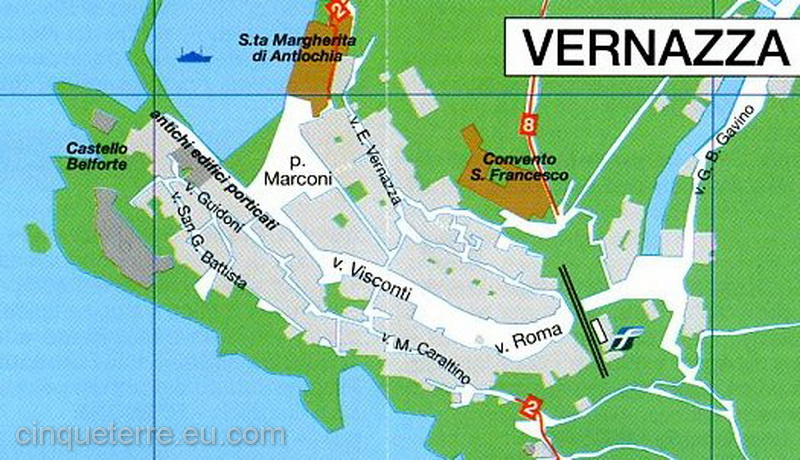

Vernazza
Vernazza fu fondata intorno all'anno Mille.
Il suo nome deriva dalla "Gens Vulnetia", antica famiglia romana alla quale appartenevano gli schiavi che, una volta liberati, fondarono il paese.
Un tempo la più prospera degli altri paesi paese delle Cinque Terre, Vernazza ospita elementi architettonici di pregio come logge, porticati, portali.
Il borgo, nobile ed elegante, si sviluppa lungo il torrente Vernezzola, ora coperto, arroccandosi sulle pendici di uno sperone roccioso.

La via dell'amore
Parco nazionale delle Cinque Terre.
